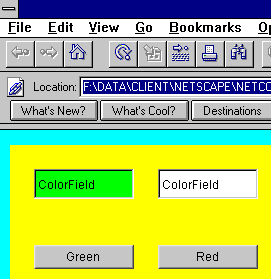

Target interface allows any IFC object to send a message to any other IFC object without knowing anything about the recipient. A timer is an object that sends a message to a target at a predefined interval.
Button class could define a ButtonInterface, and objects interested in receiving messages from a button could implement that interface. However, as the number of objects capable of sending messages grows, the number of interfaces becomes overwhelming. For example, the IFC library would need to define interfaces for Button, TextField, Slider, ScrollBar, Timer, and many other classes.
The IFC uses a single interface called Target instead of creating separate interfaces for each object. The Target interface provides the glue that allows arbitrary objects to talk to each other.
Target interface for every object that is a potential target. Use the performCommand method of Target to specify a command for each command string to execute. See "Specifying an object as a target" on page 74.
setCommand method. See "Sending messages to targets" on page 76.
setTarget method. See "Sending messages to targets" on page 76.
ExtendedTarget interface to specify that an object is capable of performing a command. See "Locating targets for commands" on page 77.
Target interface as part of the object's definition. The Target interface contains a single method:
public interface Target {
public void performCommand(String command, Object anObject);
}
In this method, command is an arbitrary string that specifies the command requested by the caller, and anObject is an arbitrary object, typically the caller. Objects such as buttons and timers issue notification messages by sending the performCommand message to instances of classes that implement Target. An object interested in receiving messages from objects implements the Target interface and takes the appropriate action when its performCommand method is invoked.
For example, the ColorRectangle class draws a light gray rectangle onscreen. ColorRectangle implements the Target interface so users can change its color. The implementation of the performCommand method specifies that ColorRectangle calls the makeGreen method whenever it receives the command string MAKE_GREEN from a sending object, and makeRed when it receives MAKE_RED.
public class ColorRectangle extends View implements Target{
static final String MAKE_GREEN = "makeGreen";
static final String MAKE_RED = "makeRed";
Color theColor;
public ColorRectangle(int x, int y, int width, int height) {
super(x, y, width, height);
theColor = Color.lightGray;
}
public void drawView(Graphics g) {
g.setColor(theColor);
g.fillRect(0, 0, width(), height());
}
public void performCommand(String command, Object obj) {
if (MAKE_GREEN.equals(command))
makeGreen(obj);
else if (MAKE_RED.equals(command))
makeRed(obj);
}
public void makeGreen(Object obj) {
theColor = Color.green;
draw();
}
public void makeRed(Object obj) {
theColor = Color.red;
draw();
}
}
performCommand message, it executes the command specified by the command string.
Predefined components issue the performCommand message at different times, as described in Table 7.1.
Use the setTarget message of the sending object to specify the target, and the setCommand message of the sending object to specify the command string that you want to send. For the text field object, setTarget specifies the target used when the user presses the Return key; setTabField and setBacktabField specify the target used when the user presses Tab and Shift+Tab, respectively.
The command string you specify for the list view and pop-up objects is a default; this command string is sent to the target when the list item selected by the user does not specify a command string. You do not specify a target for the list item object; you always specify the target in its list view or pop-up menu.
The following example shows how to send a message from a button to an instance of the ColorRectangle class described in "Specifying an object as a target" on page 74. The greenButton and redButton buttons both specify colorRectangle as their target in the setTarget method. The greenButton button sends the command string MAKE_GREEN to colorRectangle when a user clicks the button, and redButton sends the command string MAKE_RED.
setTarget method explicitly specifies colorRectangle as the target of commands that are issued when the user clicks a button component. You do not have to specify a particular object as a target for the sending object. You can also specify that your program should use the target hierarchy that is built into your application to locate a target.
For example, suppose your application contains several different text field components. At any given time, each text field must allow a user to cut, copy, or paste text. In this situation, you do not want to explicitly specify the exact text field that is the target of a CUT command string; you simply want the appropriate text field to be the target--typically the text field that has focus.
The ExtendedTarget interface lets you specify a collection of objects as a possible target, and lets you use the target hierarchy to determine which target is appropriate at any given time. The ExtendedTarget interface includes a single method, canPerformCommand, that specifies which commands a target is capable of performing. When you implement ExtendedTarget, return true for the appropriate command string from the canPerformCommand method.
For example, you can implement ExtendedTarget for the text field object to let users perform standard text editing operations. The canPerformCommand method of TextField would look similar to the following:
public boolean canPerformCommand(String command) {
For convenience, some IFC components already implement
if (CUT.equals(command) || PASTE.equals(command)) {
return isEditable();
} else if (COPY.equals(command) ) {
return isSelectable();
}
return false;
}ExtendedTarget to support standard user interactions. See "Predefined commands" on page 82 for a list of commands built into IFC components. See "Extended target example" on page 79 for an additional example of canPerformCommand.
The target hierarchy
The applicationChain method of TargetChain returns an object that can be used as the target of a command. applicationChain examines the canPerformCommand method of objects that implement ExtendedTarget to locate an object that can perform the command.
If you do not want to specify a particular object as a target for a sending object, use the applicationChain method. For example, the following code uses applicationChain to specify a target within the setTarget method:
setTarget(TargetChain.applicationChain());
See "Extended target example" on page 79 for an additional example of using applicationChain.
ExtendedTarget to the target hierarchy by using the addTarget method of TargetChain. Pass the addTarget method a boolean argument to specify whether the view is added to the beginning or end of the target hierarchy. To add a view to the beginning of the hierarchy, specify true, as shown in the following example:
TargetChain.addTarget(myView, true);To remove an object from the target hierarchy, call the
removeTarget method of TargetChain.

The
ColorField class implements ExtendedTarget to specify that any instance of ColorField can respond to either the MAKE_GREEN or the MAKE_RED message. By implementing ExtendedTarget, you also place the ColorField class in the target hierarchy.
public class ColorField extends TextFieldThe
implements Target, ExtendedTarget {
static final String MAKE_GREEN = "makeGreen";
static final String MAKE_RED = "makeRed";
Color theColor;
public ColorField(int x, int y, int width, int height) {
super(x, y, width, height);
theColor = Color.lightGray;
}
public boolean canPerformCommand(String command) {
if (MAKE_GREEN.equals(command) ||
MAKE_RED.equals(command)) {
return true;
} else {
return false;
}
}
public void performCommand(String command, Object obj) {
if (MAKE_GREEN.equals(command))
makeGreen(obj);
else if (MAKE_RED.equals(command))
makeRed(obj);
else
super.performCommand(command, obj);
}
...
}
ColorChanger class instantiates two color fields and two buttons for changing the color of the color field objects. The setTarget method of each button specifies the target with the applicationChain method, so the program uses the target hierarchy to find an appropriate target.
public class ColorChanger extends Application {
Button greenButton, redButton;
ColorField colorField, colorField2;
static final String MAKE_GREEN = "makeGreen";
static final String MAKE_RED = "makeRed";
public void init() {
super.init();
// Create a color field
colorField = new ColorField(10, 10, 100, 30);
mainRootView().addSubview(colorField);
// Create another color field
colorField2 = new ColorField(120, 10, 100, 30);
mainRootView().addSubview(colorField2);
// Create a green button
greenButton = new Button(24, 146, 100, 24);
greenButton.setTitle("Green");
greenButton.setTarget(TargetChain.applicationChain());
greenButton.setCommand(MAKE_GREEN);
mainRootView().addSubview(greenButton);
// Create a red button
redButton = new Button(148, 146, 100, 24);
redButton.setTitle("Red");
redButton.setTarget(TargetChain.applicationChain());
redButton.setCommand(MAKE_RED);
mainRootView().addSubview(redButton);
}
}
When the user clicks the greenButton button, it sends a performCommand message with the MAKE_GREEN command string. Because the setTarget method specifies applicationChain, the program searches for an ExtendedTarget that is capable of performing the MAKE_GREEN command.
The target chain uses the canPerformCommand method of the ColorField class to determine that a ColorField instance is a possible target for MAKE_GREEN. Because the program has two instances of ColorField, it uses the target hierarchy to determine which ColorField instance will execute the command. The first view that the target hierarchy examines is the focused view; therefore, the program changes the color of the color field that has focus.
ExtendedTarget interface defines a set of command strings that are used by certain IFC objects for many common interactions. For example, the SET_FONT command string is used to set an object's font. These commands are provided for your convenience; you are not limited to using only this set of commands.
To use a predefined command, implement ExtendedTarget and return true for the appropriate command string from the canPerformCommand method, as described in "Locating targets for commands" on page 77. The performCommand method must take the appropriate action when it receives one of these command strings.The complete set of predefined commands is described in Table 7.1.
|
Object
|
Predefined commands supported
root view |
| SHOW_FONT_CHOOSER
text view |
| SET_FONT
|
|---|
The objects listed in Table 7.1 implement ExtendedTarget and return true in the canPerformCommand method for the shown predefined commands.
performCommand message to its target after a specified interval elapses. Use the start method in the Timer class to start the timer running, and the stop method to stop it.
For example, you can use a timer to run a simple animation by making it show the next frame after a specified number of milliseconds elapses. Such a timer is especially useful, because it can operate an animation while letting the application continue to respond to user input.
Supporting this type of concurrent behavior usually requires spawning additional threads, and managing the resource locks and synchronization schemes necessary to create thread-safe code. Timers enable concurrent behavior without the need to spawn threads.
Create a timer with the constructor shown in the following prototype:
public Timer(Target target, String command, int delay)The timer sends the message command to its target every delay milliseconds. This constructor associates a timer with the application's default event loop; a second form of the constructor lets you specify the event loop. The following example uses a timer to run an animation. The
startButton and stopButton buttons call the start and stop methods to control the timer, and the timer uses the NEXT_FRAME command to run the animation.
public class MovieView extends View implements Target {
Button startButton, stopButton;
Timer timer;
static final String START = "start";
static final String STOP = "stop";
static final String NEXT_FRAME = "nextFrame";
public void init() {
super.init();
startButton = new Button(24, 146, 100, 24);
startButton.setTitle("Start");
startButton.setTarget(this);
startButton.setCommand(START);
mainRootView().addSubview(startButton);
stopButton = new Button(148, 146, 100, 24);
stopButton.setTitle("Stop");
stopButton.setTarget(this);
stopButton.setCommand(STOP);
mainRootView().addSubview(stopButton);
// Create a timer
timer = new Timer(this, NEXT_FRAME, 2000);
}
public void performCommand(String command, Object obj) {
if (START.equals(command))
timer.start();
else if (STOP.equals(command))
timer.stop();
else if (NEXT_FRAME.equals(command))
draw();
}
...
}
Additional methods in the Timer class let you have more control over a timer. For example, the setInitialDelay method lets you change the amount of time that elapses before a timer begins, and the setCoalesce method lets you specify whether to coalesce multiple pending timer messages. See "Event coalescing" on page 49 for more information.